Les Fruit Loops causent le cancer?
À ce qu'il paraît, les fruit loops causent le cancer... Voici comment.
Savez-vous que les céréales sont délicieuses??? Ce site va vous parler de tous les meilleurs côtés des céréales!
Auteur: Émile Albala
Département de techniques d'intégration multimédia - Automne 2024 - Collège de Maisonneuve - 3800 Sherbrooke Est, Montréal
Site Github!Abonnez-vous à la newsletter des céréales! On vous envoie une photo de la céréale du jour, incluant un fait divers!
| Les céréales les plus INCROYABLES! | S | 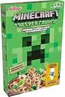 | 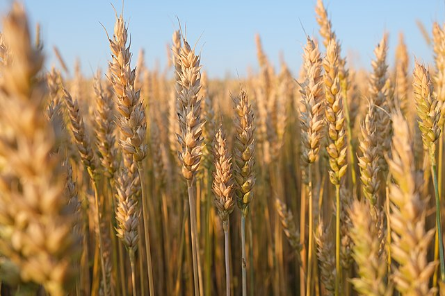 | 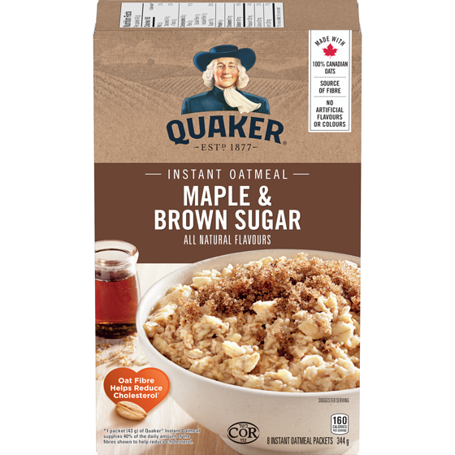 | |
|---|---|---|---|---|---|
| Céréales bonnes mais pas parfaites | A | 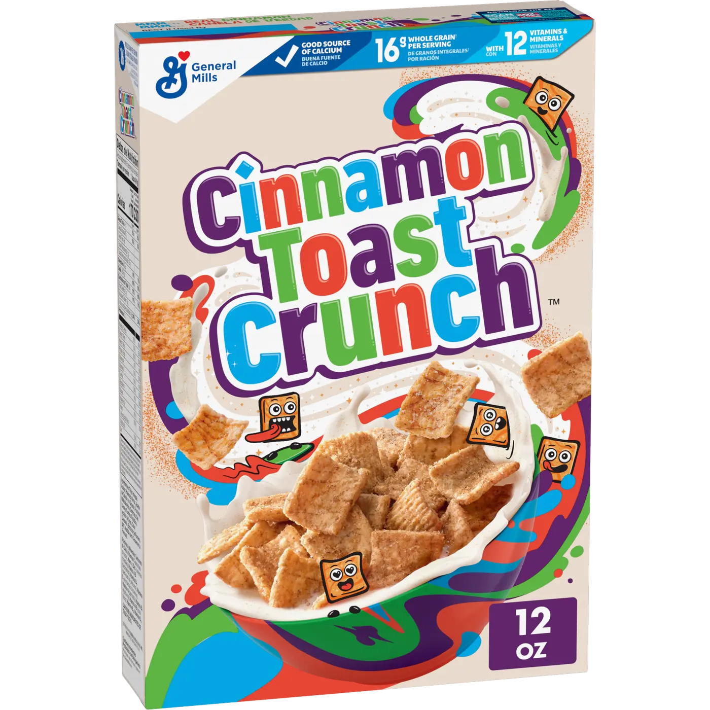 | 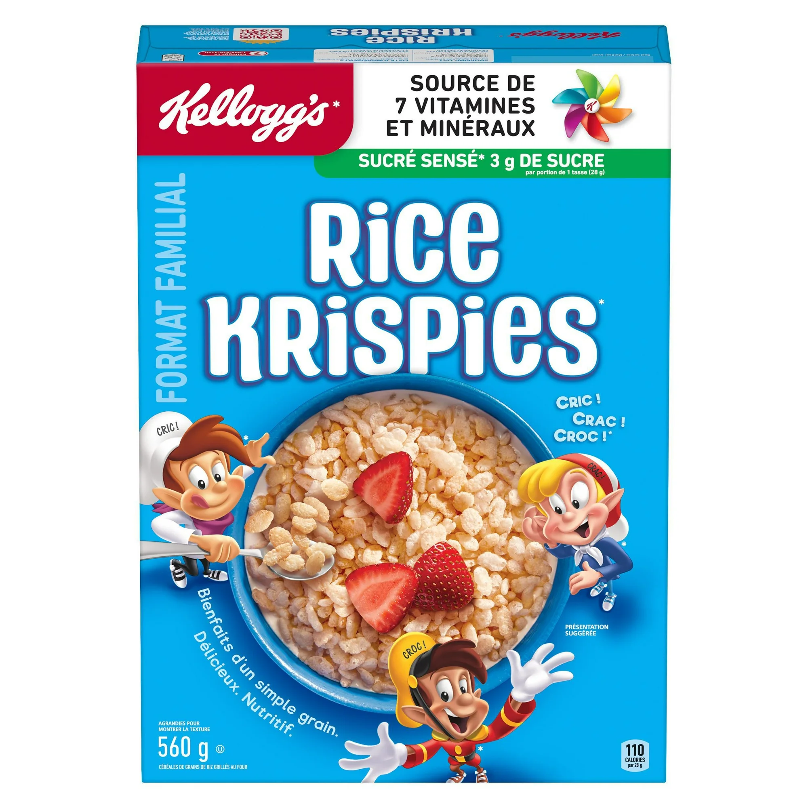 | 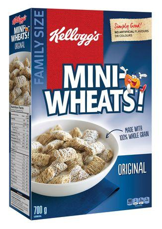 | |
| Céréales pas spéciales | B | 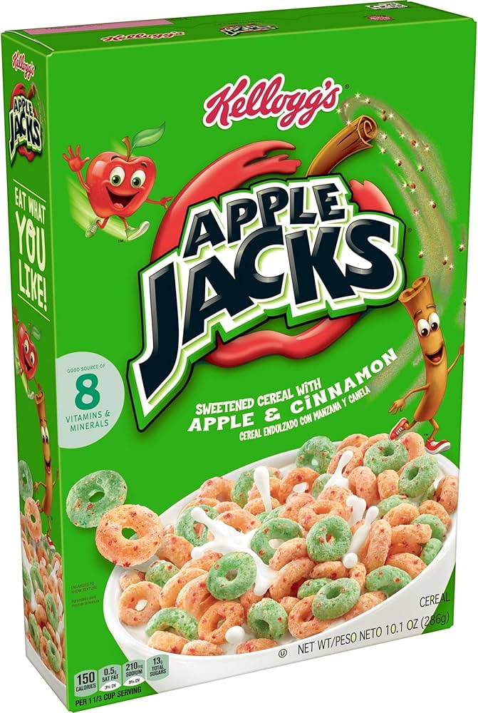 | 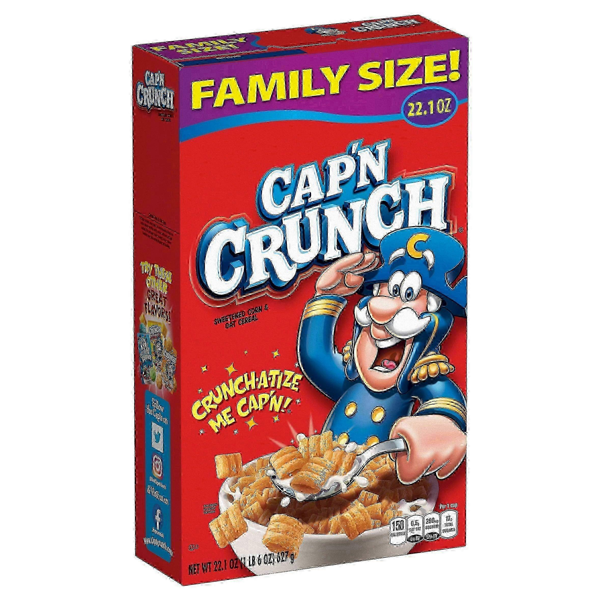 | ||
| Céréales pas terribles... | C | 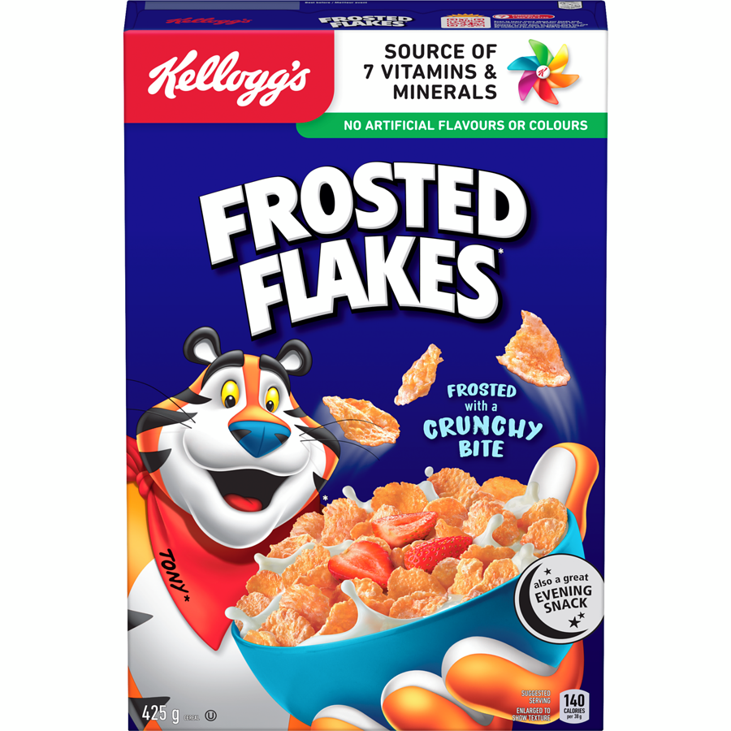 | 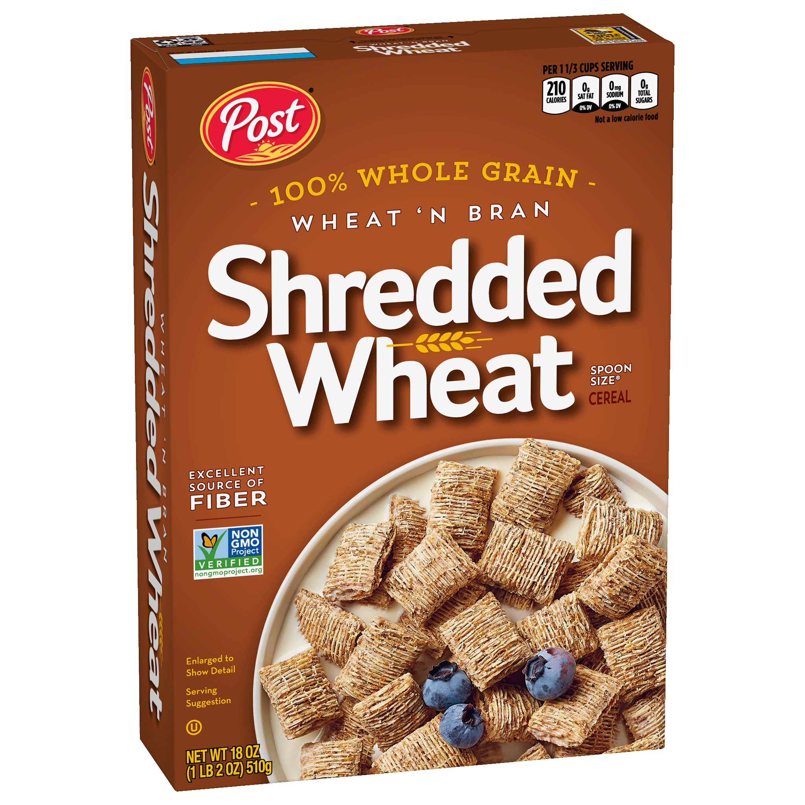 | ||
| Céréales à éviter! | D | 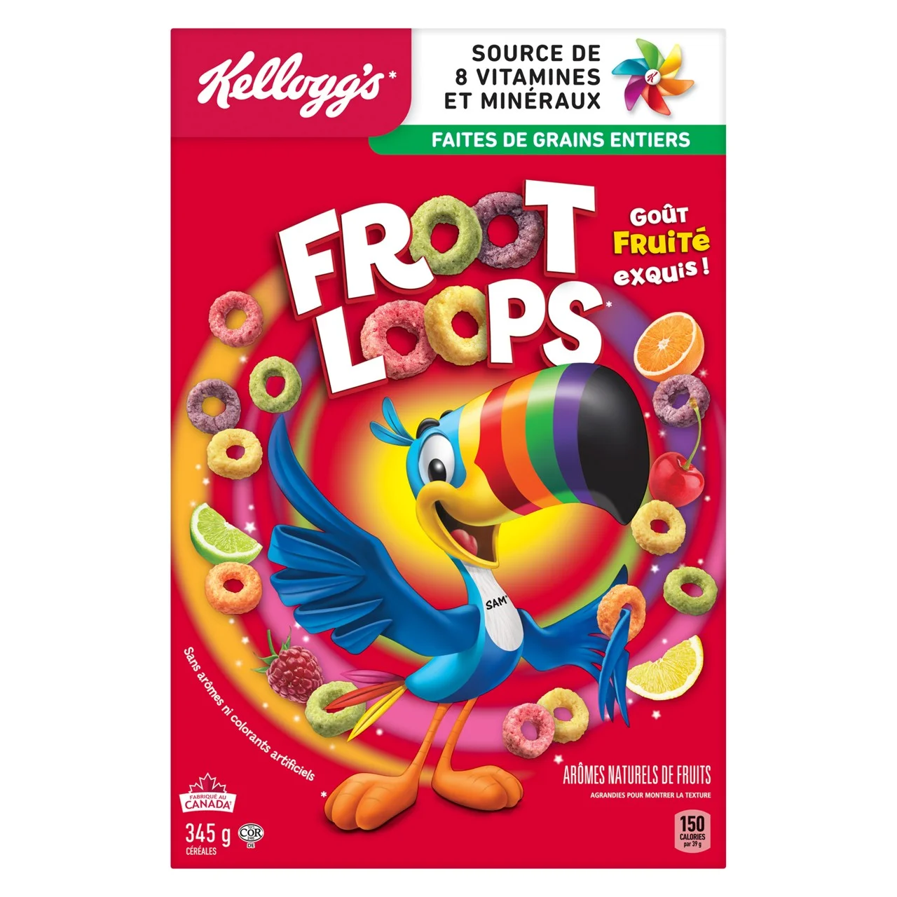 | 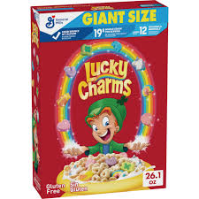 | 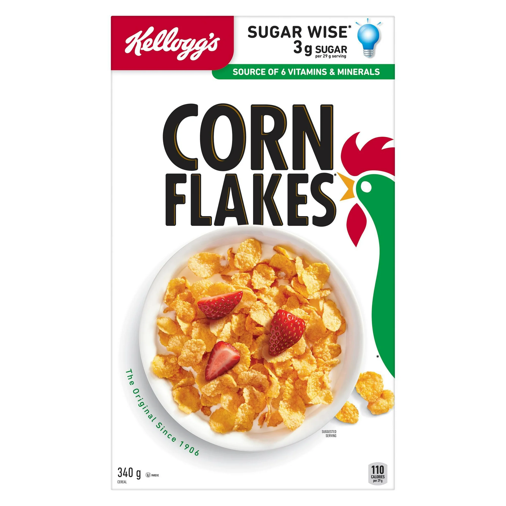 | |
| Les PIRES céréales! | F | 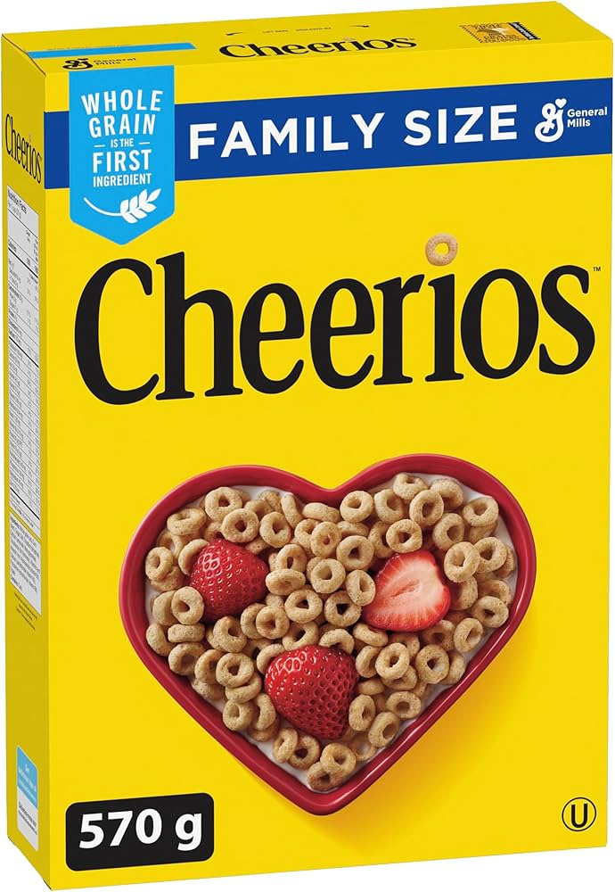 | 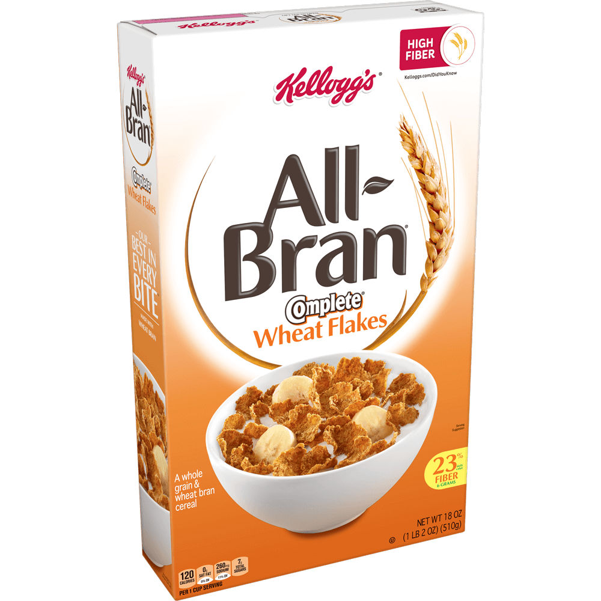 |
À ce qu'il paraît, les fruit loops causent le cancer... Voici comment.
Faut-il coire en cette conspiration?
Saviez-vous que 50% des américains mangent des céréales comme déjeuner? Apprenez 50 autres faits surprenants!